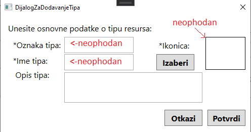

Kreiranje tipa događaja
Prilikom kreiranja novog tipa događaja, neophodno je da popunite:
- Oznaku tipa događaja (mora biti jedinstvena među tipovima događaja)
- Naziv tipa događaja
- Ikonicu tipa događaja
a polje koje nije obavezno popuniti je:
Zatim je potrebno da kliknete na dugme Potvrdi i tip događaja je kreiran.

Kreiran tip događaja će se naći u listi tipova događaja koje je moguće pridružiti događaju.

Povratak na početnu stranicu